Banking, debt, and currency crises: Early warning indicators for developed countries
Jan Babecky, Tomas Havranek, Jakub Mateju, Marek Rusnak, Katerina Smidkova, Borek Vasicek (2012), "Banking, debt, and currency crises: Early warning indicators for developed countries." ECB Working Paper Series No. 1485. https://www.ecb.europa.eu/pub/pdf/scpwps/ecbwp1485.pdf. The text here is the working paper.
Jan Babecký, Tomáš Havránek, Jakub Matějů, Marek Rusnák, Kateřina Šmídková and Bořek Vašíček
European Central Bank, Working Paper Series, No 1485 / October 2012. Macroprudential Research Network.
Jan Babecký and Bořek Vašíček at Czech National Bank, Economic Research Department, Na Příkopě 28, 115 03 Prague 1, Czech Republic; e-mail: borek.vasicek@cnb.cz
Tomáš Havránek, Marek Rusnák and Kateřina Šmídková at Czech National Bank, Economic Research Department, Na Příkopě 28, 115 03 Prague 1, Czech Republic and Charles University, Institute of Economic Studies, Prague 1, Opletalova 26, 110 00 Prague 1, Czech Republic.
Jakub Matějů at Czech National Bank, Economic Research Department, Na Příkopě 28, 115 03 Prague 1, Czech Republic and CERGE-EI, Politických vězňů 7, 111 21 Prague 1, Czech Republic.
Acknowledgements This work was supported by Czech National Bank Research Project No. C3/2011. Help of the ESCB Heads of Research Group and the MaRs network is gratefully acknowledged. We thank Vladimir Borgy, Carsten Detken, Peter Dunne, Stijn Ferrari, Jan Frait, Michal Hlaváček, Roman Horváth, João Sousa, and an anonymous referee for their helpful comments. The paper benefited from discussion at seminars at the Czech National Bank and the Central Bank of Ireland, the MaRs WS2 April 2011 workshop, and the First Conference of the MaRs Network, 2011. We thank Renata Zachová and Viktor Zeisel for their excellent research assistance. We are grateful to Inessa Love for sharing her code for the panel VAR estimation. We thank the Global Property Guide (www.globalpropertyguide.com) for providing data on house prices. The opinions expressed in this paper are solely those of the authors and do not necessarily reflect the views of the Czech National Bank.
Abstract
We construct and explore a new quarterly dataset covering crisis episodes in 40 developed countries over 1970–2010. First, we examine stylized facts of banking, debt, and currency crises. Banking turmoil was most frequent in developed economies. Using panel vector autoregression, we confirm that currency and debt crises are typically preceded by banking crises, but not vice versa. Banking crises are also the most costly in terms of the overall output loss, and output takes about six years to recover. Second, we try to identify early warning indicators of crises specific to developed economies, accounting for model uncertainty by means of Bayesian model averaging. Our results suggest that onsets of banking and currency crises tend to be preceded by booms in economic activity. In particular, we find that growth of domestic private credit, increasing FDI inflows, rising money market rates as well as increasing world GDP and inflation were common leading indicators of banking crises. Currency crisis onsets were typically preceded by rising money market rates, but also by worsening government balances and falling central bank reserves. Early warning indicators of debt crisis are difficult to uncover due to the low occurrence of such episodes in our dataset. Finally, employing a signaling approach we show that using a composite early warning index increases the usefulness of the model when compared to using the best single indicator (domestic private credit).
JEL Codes: C33, E44, E58, F47, G01.
Keywords: Early warning indicators, Bayesian model averaging, macro-prudential policies.
NONTECHNICAL SUMMARY
At first glance, the literature on early warning indicators of economic crises might seem extensive. A number of influential studies look, for example, at currency and twin crises in emerging economies and at debt and banking crises in large cross-country data sets. However, studies focusing on early warning indicators for developed countries are relatively rare. Under closer scrutiny, it turns out that the identification of relevant early warning indicators depends on the definition of crisis occurrence, which is the dependent variable in early warning models, and on the choice of sample countries. At the same time, there is no full consensus in the literature on the definition of crisis occurrence. For example, while currency crises are commonly defined as episodes of massive exchange rate depreciation, the term 'massive' covers losses of currency value ranging from 15% to more than 30% across different studies. The definition of banking crises involves judgment on exposures (e.g. small banking versus systemic banking), and the coding of periods of debt crisis implies judgment on the debt category (e.g. domestic or external default, debt restructuring, or a combination thereof).
Therefore, we start by constructing discrete indices of the occurrence of banking, debt, and currency crises by aggregating the available data sources, which, besides academic studies, include our survey of country experts. Our resulting quarterly database captures the occurrence of the main types of economic crisis for a set of 40 EU and OECD countries in 1970–2010. The data demonstrate that determining the exact timing of crises, and in particular the exact end of crises, is a subject of substantial disagreement among the sources surveyed. Aggregation of various data sources thus allows us to construct robust indices of crisis occurrence. We make the aggregated discrete indices for all countries available in an online appendix to this paper.
Second, we examine stylized facts of banking, debt, and currency crises in developed economies. According to our findings, banking crises were the most frequent type of crisis, followed by currency and debt crises. The mean duration is 15.2 quarters for banking crises (with mean occurrence in 16% of the quarterly observations), 4.1 quarters for debt crises (with mean occurrence in 1.3% of the quarterly observations), and 4.6 quarters for currency crises (with mean occurrence in 5.2% of the quarterly observations). The duration of banking crises in developed economies lies in the upper range of the estimates reported by previous studies obtained for heterogeneous sets of countries including both developed and emerging economies (4–16 quarters). On the contrary, the duration of debt crises in developed economies is found to be at the lower bound of the typical duration of default episodes in large country sets (3–6 years).
Third, we examine causality between the occurrence of the individual types of crisis as well as the link between crisis occurrence and economic activity. According to the panel vector autoregression framework employed to account for the complex dynamics of these interactions, currency and debt crises in developed countries were typically preceded by banking crises, but not vice versa. Banking crises appear to be the most persistent. The probability of observing a banking crisis still lies above 50% even two years after its onset, while this probability for debt and currency crises declines after a few quarters. As for the real costs, all three types of economic crisis result in a decline in GDP growth. Nevertheless, banking crises in developed countries appear to be particularly costly, due to both their longer duration and the fact that they may have triggered other types of crisis.
Fourth, we identify the most useful early warning indicators for each type of crisis by means of Bayesian model averaging (BMA). BMA takes into account model uncertainty by considering various model combinations and thus has the advantage of minimizing the author's subjective judgment in determining the optimal set of early warning indicators. We apply BMA to a set of 30 macroeconomic and financial indicators selected on the basis of a literature review, given data availability. To account for the fact that early warning signals may come at different horizons, we consider time horizons varying from less than a year ('late warning') to up to three years ('early warning').
Our results show that the ratio of domestic private credit to GDP represents the most consistent early warning indicator of banking crises in developed economies across the various specifications and time horizons. In addition, rising FDI flows, increasing money market rates, and global economic booms (rising world GDP and inflation) are also important risk factors worth monitoring. For currency crises, the main leading indicators include rising money market rates, worsening government balances, and falling central bank reserves. The low occurrence of debt crises in our sample stops us obtaining a set of robust early warning indicators.
Finally, we assess the performance of selected early warning indicators by means of signaling analysis. By minimizing policy makers' loss function for an equal preference weight between missed crises and false alarms, we show that a warning signal should be issued whenever the most robust indicator—the ratio of domestic private credit to GDP—rises more than 2% above its long-term trend. We also illustrate that a simple combination of several of the most useful indicators (i.e., those selected by Bayesian model averaging) delivers an even lower share of missed crises and false alarms, compared to the case of relying on a single (albeit the best) early warning indicator.
1. Introduction
Although the literature on crises and early warning is extensive, the research on the occurrence and early warning indicators of economic crises in developed countries is still relatively thin. However, recent experience has demonstrated the relevance of the topic for developed economies. Our paper tries to establish which stylized facts on crisis occurrence and which early warning indicators are relevant for developed countries by employing an advanced technique to overcome model uncertainty and by utilizing a new quarterly data set.
Traditionally, the literature on crises has been focused on emerging markets (Frankel and Rose, 1996; Kaminsky et al., 1998; and Kaminsky and Reinhart, 1999, among others). More recently, large samples of countries, including both developing and developed economies, have been explored (Rose and Spiegel, 2011; Frankel and Saravelos, 2012). While currency crises were the subject of investigation in the pioneering studies, the recent literature has tried to encompass more types of costly events, including various types of banking and debt crises (Leaven and Valencia, 2012; Levy-Yeyati and Panizza, 2011; Reinhart and Rogoff, 2011).
The literature has suggested that all types of crisis can be very costly and that there are possible causal relationships between various types of crises (Kaminsky and Reinhart, 1999; Reinhart and Rogoff, 2011). While output losses are induced by disruptions of the credit supply in the case of banking crises (Dell'Ariccia et al., 2008), the massive devaluations inherent to currency crises are detrimental to trade flows (Kaminsky and Reinhart, 1999). Debt crises in turn mostly increase the cost of sovereign borrowing (Borensztein and Panizza, 2009) and are usually followed by austerity measures that have an adverse impact on domestic demand.1
The literature has also proposed various early warning indicators, such as depletion of international reserves, real exchange rate misalignment or excessive domestic credit growth for currency crises in emerging markets (Frankel and Rose, 1996; Kaminsky et al., 1998; Bussiere, 2013), rapid growth in domestic credit and monetary aggregates for both banking and currency crises (Kaminsky and Reinhart, 1999), a sharp increase in private indebtedness for banking crises (Reinhart and Rogoff, 2011), growth in global credit for costly asset price bubbles (Alessi and Detken, 2011), a large real GDP decline for debt crises (Levy-Yeyati and Panizza, 2011), the level of central bank reserves and real exchange rate appreciation for costly events such as the recent financial crisis (Frankel and Saravelos, 2012), and a combination of several indicators into composite indices for banking crises (Borio and Lowe, 2002). Alternatively, it has been proposed that it is difficult to find significant leading indicators to explain the cross-country incidence of the recent financial crisis (Rose and Spiegel, 2011).
Our paper is focused on stylized facts and early warning indicators relevant for developed countries over the past 40 years. For the purpose of this paper, we define developed economies as the EU and OECD countries.2 The findings of the previously quoted literature may or may not be applicable to developed economies for various reasons. For example, the reasons for, and propagation of, crises in emerging and developed economies may differ due to different levels of financial development and intermediation and to differences in the term structure of debt contracts (short- versus long-term) and their currency denomination (Mishkin, 1997). Therefore, stylized facts on crisis occurrence in developed economies should be compiled from a panel consisting of these economies only. Also, the lack of significant early warning indicators may be due to the large country heterogeneity of the previously analyzed samples.
Our main contributions to the literature are the following. First, we construct and make available a quarterly database of the occurrence of banking, debt, and currency crises (or, alternatively, balance of payment crises) for a panel of 40 developed countries over 1970–2010. To minimize subjective judgment in defining crisis episodes, we consider various available sources, including both published studies and country experts' opinions based on our survey. The data demonstrate that there is substantial variation in the definition of crises across the published studies. Importantly, one can observe greater discrepancy in the determination of crisis endpoints compared to crisis onsets. To cross-check for the timing of crisis periods, we conduct a comprehensive survey among country experts (mostly from central banks) from all the sample countries. The final database of crisis occurrence is provided in the online appendix.3
Second, the new database allows us to examine stylized facts for developed economies, such as causal links between individual types of crises on the one hand, and between crisis occurrence and economic activity on the other hand.4 To address the simultaneity issue and interactions between crises and economic activity, we employ a panel vector autoregression (PVAR) model that is well suited to studying the dynamic dependencies among the variables when limited time coverage can be complemented by the cross-sectional dimension (Canova and Ciccarelli, 2009; Ciccarelli et al., 2010). To identify the effects of the different types of crises on economic activity, we combine the dummy-variable approach applied in the literature investigating the effects of monetary policy (Romer and Romer, 1994) and fiscal shocks (Ramey-Shapiro, 1998; Ramey, 2011) with the common recursive VAR identification. Our results suggest that in developed economies, currency and debt crises were typically preceded by banking crises and not vice versa (in what follows, our ordering of the costly events examined in this paper runs from banking to debt and currency crises). Banking crises rank among the most costly in terms of the overall output loss; it takes about six years for output to recover after a typical banking crisis in a developed economy.
Third, this paper attempts to identify early warning indicators of banking, debt ,and currency crises specific to developed countries. We apply the Bayesian model averaging (BMA) technique (Madigan and Raftery, 1994; Raftery, 1995, 1996) in order to select the most useful early warning indicators among the set of all available variables. In particular, we test around 30 potential early warning indicators at time horizons varying from 4 to 12 quarters. BMA has also the advantage of minimizing the impact of the authors' subjective judgment on the selection of early warning indicators. We find that the onsets of banking and currency crises in developed economies are typically preceded by booms in economic activity. Growth of domestic private credit, increasing FDI inflows, rising money market rates, and increasing world GDP and inflation are common leading indicators of banking crises. Currency crises were typically preceded by rising money market rates and also by a worsening government balance and falling central bank reserves. Regarding debt crises, their low occurrence in the sample of developed countries makes it difficult to establish consistent early warning indicators. The relatively low proportion of crises (in particular, debt crises) is a cost we pay for our preference for sample homogeneity.
Finally, we apply signaling analysis to evaluate the performance of early warning indicators of banking crises in terms of the trade-off between Type I (missed crises) and Type II (false alarms) errors (Kaminsky and Reinhart, 1999; Alessi and Detken, 2011, among others). While domestic private credit is the most robust single early warning indicator of banking crisis onsets in developed economies, we find that a combination of early warning indicators improves the performance of the early warning mechanism. This finding is in line with previous proposals to work with combined indicators (Borio and Lowe, 2002).
The paper is organized as follows. Section 2 presents the new quarterly database of banking, debt, and currency crises in 40 EU and OECD economies over 1970–2010. Section 3 presents stylized facts based on the quarterly dataset, including the results of the panel VAR analysis of the dynamic linkages between banking, debt, and currency crises and the costs of the different types of crisis. Section 4 examines the potential early warning indicators of banking, debt, and currency crises. The performance of the early warning indicators of banking crises is evaluated in Section 5. The last section concludes.
2. New Quarterly Database of Economic Crises in Developed Economies
For the purposes of this study, we assemble a quarterly database of economic crises in EU and OECD countries over 1970:Q1–2010:Q4. For each country, three binary variables capture the timing of banking, debt, and currency crises. The corresponding crisis occurrence index takes value 1 when a crisis occurred (and value 0 when no crisis occurred). The index aggregates information about crisis occurrence from several influential papers and from our own survey. According to this aggregation approach, value 1 indicates that at least one of the sources claims that a crisis occurred.
The influential papers we include are the following (in alphabetical order): Caprio and Klingebiel (2003); Detragiache and Spilimbergo (2001); Kaminsky (2006); Kaminsky and Reinhart (1999); Laeven and Valencia (2008, 2010, 2012); Levy-Yeyati and Panizza (2011); and Reinhart and Rogoff (2008, 2011). These papers do not provide a universal definition of crisis for three reasons. First, while some studies identify crisis episodes with the help of a certain variable and its threshold value (e.g. Kaminsky and Reinhart, 1999; Kaminsky, 2006), other studies (e.g. Caprio and Klingebiel, 2003; Laeven and Valencia, 2008) employ expert judgment or use systematic literature or media reviews (see Annex I.2 for details of alternative definitions). Second, there is considerable disagreement in many cases about when a particular crisis ended (it is easier in general to find information on the exact timing of the onset of a crisis) since the underlying indicators typically return to their 'normal' levels only gradually. Third, some studies do not cover all developed countries due to their specific focus and also due to various data limitations.
This lack of a universal definition led us to prefer an aggregated crisis occurrence index, which offers more robust information about crisis occurrence than a single specific definition of crisis given the limits of the various definitions. Moreover, we did not want to omit country-specific issues, which are downplayed when a single indicator is used to define a crisis across a sample of countries. We felt that the knowledge and judgment of country experts would be a very valuable addition to our aggregation exercise. Therefore, we ran a comprehensive survey among country experts, mostly from national central banks, in all countries in the sample.5 Obtaining quarterly data was an additional motive to run the survey, because most of the influential papers work with annual data (see Annex I.2).
Figures 1 and 2 provide a basic description of our quarterly binary indices. The sample of 6,560 quarters allows us to analyze 1,047 quarters of banking crises, 343 quarters of currency crises, and 90 quarters of debt crises. The number of developed countries in crisis peaked in the early 1990s and during the recent crisis (Figure 1). Japan scores highest in terms of the number of quarters in which we identify a crisis (Figure 2).
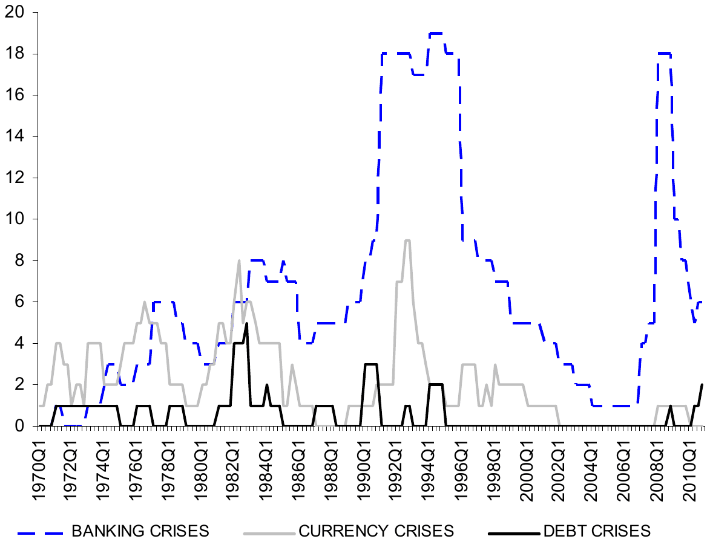
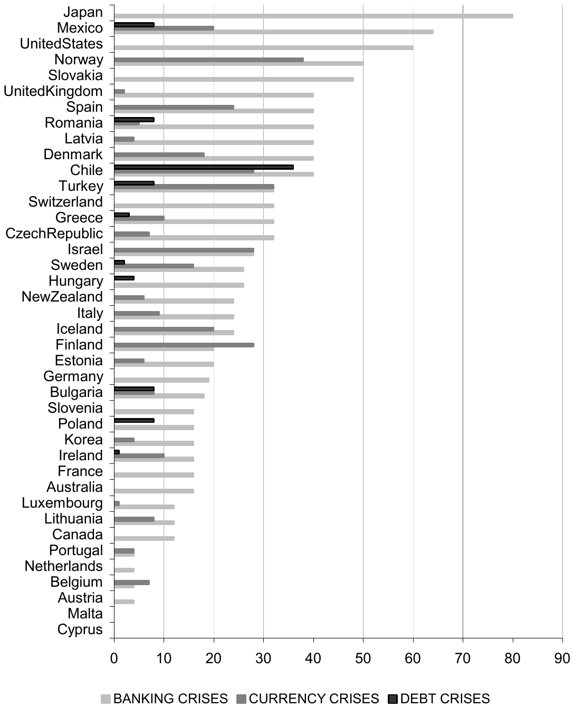
Taking the example of banking crises, which are the most frequent in our sample, Figure 3 illustrates that there is a considerable degree of disagreement between the various sources in identifying periods of crisis. If the definitions were very similar, the issue of robustness would not be so important. We compare the number of quarters when at least one of the sources records a banking crisis, the number of quarters confirmed by the country experts, and finally the number of quarters when at least two of the sources (including the country experts) agree. While in some countries (Mexico) there is no apparent disagreement about the identification of banking crises, in other countries, such as Japan, divergence in views is more than obvious. To minimize subjective judgment in defining crisis episodes, we perform aggregation. That is, for each of the three types of crisis, we define crisis occurrence if at least one of the sources indicates so.
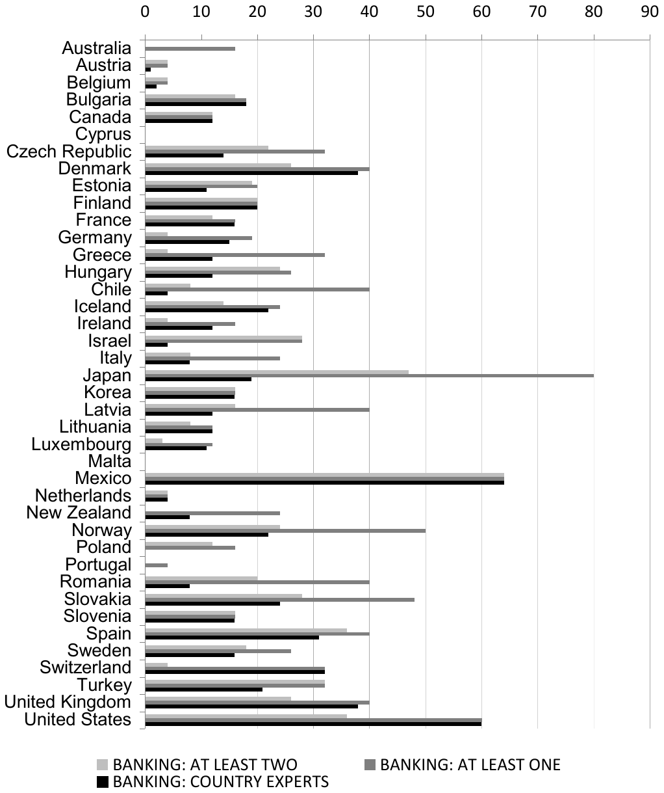
Number of quarters spent in crisis according to (i) at least one source from the literature, (ii) country experts, and (iii) at least two sources (country experts included)
Our database also indicates that it is more difficult to agree on banking and debt crisis definitions compared to the currency crisis definition in the case of developed economies. In the papers surveyed, banking crises are identified either according to a systemic loss of bank capital, or bank runs, or the size of public intervention in the banking sector. Country experts add additional perspectives. For example, periods of successful preemptive public intervention (no bank actually failed) should not be considered a banking crisis (e.g. in Australia 1989–1992). For emerging markets (Chile 1970s, Israel 1970s, Czech Republic 1990s), liberalization and structural changes in the banking sector should be carefully distinguished from banking crises. The debt crisis definitions are also rather heterogeneous, ranging from sovereign debt default to debt restructuring to strong fiscal consolidation following significant political changes.
Although the general definition of a currency crisis (or a balance of payments crisis) is similar across the papers surveyed, it is worth noting that the numerical thresholds are not the same. All papers consider foreign exchange tension, which can manifest through large currency devaluation (depending on the exchange rate regime in place), a need for exchange rate interventions or a substantial loss of foreign currency reserves (or, alternatively, a substantial increase in spreads between domestic and foreign currency denominated assets). However, the definition of large devaluation ranges from 15% to more than 30% across the different studies. The ERM breakdown in 1992/93 is another notable problem. While the studies we surveyed labeled it as a currency crisis in all EU countries, some EU country experts point out that this event did not have a country-specific idiosyncratic component and that the ERM collapse was a complex period, as several currencies in the mechanism de facto depreciated as some strong currencies (the German, Dutch, and Belgian ones) were simultaneously realigned upwards.
3. Banking, Debt, and Currency Crises in Developed Countries: Stylized Facts
To analyze the interactions of banking, debt, and currency crises in developed economies and estimate their costs in terms of the real output gap, we use the panel vector autoregression (PVAR) model (Holtz-Eakin et al., 1988; Assenmacher-Wesche and Gerlach, 2010; Canova and Ciccarelli, 2009; Ciccarelli et al., 2010). The PVAR specification can be written as follows:
where i stands for cross section and t for time period, is a 3 x 1 endogenous variable vector, and the cross-sectional heterogeneity is controlled for by including fixed effects . To obtain the structural impulse responses from the estimated reduced form equations, we employ Choleski decompositions (recursive identification). As a first look at the interaction between the three types of crises, we used the following ordering: . In other words, a banking crisis is allowed to have a contemporaneous effect on debt and currency crises, but not vice versa. Similarly, a debt crisis can contemporaneously affect the occurrence of a currency crisis. We motivate this ordering by the fact that such ordering gives the most clear-cut results. The alternative orderings did not qualitatively change the results and are available upon request. In addition, previous findings for emerging countries support the selected ordering. Figure 4 reports the impulse response functions from a (2-lag) VAR (with 6,560 observations) including dummy variables for the relevant kind of crisis. The responses are normalized, i.e., the value on the y-axis is interpreted as the probability of crisis occurrence within x quarters in the future after the occurrence of a crisis at present.
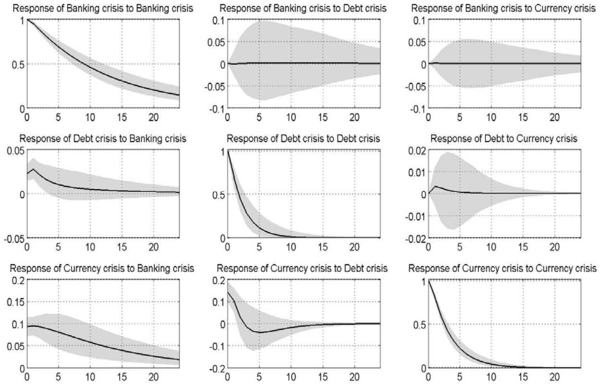
First of all, it is apparent that banking, debt, and currency crises in developed economies do not have the same degree of time persistence (see the diagonal graphs of Figure 4). While banking crises are very persistent (Figure 4: first row, first column), the likelihood of debt and currency crisis occurrence declines rapidly after the first onset of such crises. In particular, there is still a 50% probability that the banking crisis will last even eight quarters after its onset. On the other hand, for debt and currency crises, the probability that these crises will last more than 2–3 quarters is less than 50%. This persistence of currency crises corroborates with the findings of Bussiere (2013). Drawing on a dataset of currency crises in 27 countries over 1994–2003 at monthly frequency, he reports that currency crises had a tendency to happen again about six months after the first occurrence.
Logically, the persistence of crises turns out to be related to their duration in our sample countries. According to the descriptive statistics, the mean duration is 15.2 quarters for banking crises, 4.6 quarters for currency crises, and 4.1 quarters for debt crises.6 Such duration of banking crises lies broadly in the upper range of the estimates reported by previous studies for various sets of countries, including both developed and emerging economies: according to Frydl (1999) and the studies listed therein, the average length of a banking crisis was between 2.6 and 3.9 years (equivalently 10.4 and 15.6 quarters). A finding of longer banking crises in developed economies follows from Laeven and Valencia (2012): during 1970–2011 the average duration of banking crises was 3.0 years for advanced economies, 2.0 years for emerging economies, and 1.0 years for developing economies.
Regarding debt crises, their relatively short duration for developed countries (about one year) is somewhat in contrast to the patterns observed from larger sets of countries which include the emerging markets. For example, drawing on evidence from 70 countries, Reinhart and Rogoff (2011) show that debt crises were the most long-lasting, the median duration of default episodes being three years for the period 1946–2009 and even six years for 1800–1945.
In line with the previous literature, we also checked whether the onset of one type of crisis increases the probability of occurrence of another type of crisis. We do not find a significant response of banking crises to currency crisis occurrence in developed countries (Figure 4: first row, third column). Mishkin (1997) points out important differences between developed and emerging economics in terms of the causes and propagation of crises. In particular, given that foreign currency lending is less common in developed countries, possible exchange rate turmoil will not be that detrimental to banking balance sheets.
On the other hand, our results suggest that banking crises often precede currency crises (Figure 4: third row, first column), which is consistent with previous studies using large heterogeneous samples of countries or emerging countries (Kaminsky and Reinhart, 1999; Reinhart and Rogoff, 2011; Leaven and Valencia, 2012). The theory based on narratives of (mainly) emerging countries offers several explanations for this link. First, bank bail-outs may be financed by 'printing money' (Krugman, 1979; Velasco, 1987), thereby causing nominal devaluation of the domestic currency. Second, currency and maturity mismatches in banking sector balance sheets might provoke currency turmoil (Krugman, 1999). Third, a crisis in a banking sector and a related credit crunch may cause pessimistic (even self-fulfilling) expectations about future developments in the domestic economy and cause foreign investment to flow away. In the face of narrative evidence suggesting generally sound monetary policy and a lack of currency mismatches, we believe the last hypothesis to be the most plausible.
Debt crises in developed economies (like currency crises) seem to be preceded by banking crises (Figure 4: second row, first column). The link from banking to debt crises may be explained by several factors. First, costly bank bail-outs shift credit risk from bank balance sheets to national fiscal accounts. Governments may even decide to offer explicit deposit insurance (e.g. Ireland in 2009) to prevent bank runs. Second, policy makers may want to introduce a fiscal stimulus to strengthen domestic demand. On the other hand, we do not find any evidence for the 'reverse loop' running from debt to banking crises (first row, second column). This may be because, as can be seen from Figure 1, the occurrence of debt crises has been very limited in developed economies and the current euro area debt crisis is not fully materialized in the data yet. Moreover, the recent euro area crisis has many specific features unrecorded in previous episodes of financial turmoil (Mody and Sandri, 2012).
In the case of developed economies, the link between debt and currency crisis is the least evident one. We find no evidence that a currency crisis leads to a debt crisis in developed countries (Figure 4: second row, third column). According to the previously quoted studies, currency turmoil could lead to a sovereign debt crisis if public debt is mostly denominated in foreign currency. However, this applies more to developing countries than to developed countries. On the contrary, a debt crisis may lead to a currency crisis in developed economies if currency depreciation is used as an adjustment tool after a default on debt obligations. Analogously, we find a significant and immediate reaction of a currency crisis to a debt crisis (Figure 4: third row, second column). This finding is in line with the conclusions of theoretical models, dating back to Krugman (1979), that governments can use inflationary measures to solve their fiscal problems (besides using them for banking bail-outs as noted above). In fact, there is a 10–20% probability that a currency crisis will appear after the onset of a debt crisis. This is the highest cross-crisis linkage in our sample.
All in all, our findings suggest that developed economies are not so different from emerging countries. In both cases, empirical narratives show that banking crises can cause currency and debt crises. The importance of banking crises is reinforced in our sample of developed economies, as they are substantially more frequent than the other kinds of crisis. We find no significant feedback from currency crises to banking crises in our data sample. This is probably related to the fact that the propagation mechanism is different (Mishkin, 1997). In particular, the advanced economies are less prone to the 'original sin' of borrowing in foreign currency, which makes them less subject to currency attacks (Eichengreen and Hausmann, 2005).
When analyzing the interactions between banking, debt, and currency crises, it is interesting to compare what the real costs of these types of crises are in terms of total output. We use the same methodology of panel VAR to assess the costs of the various types of crises. As the output loss measure, we use the year-on-year growth rate of real GDP. To test the different effects of different types of crises, we computed the impulse responses of the output loss (simple and cumulative) to each type of crisis occurrence in a bivariate panel VAR with the following ordering .
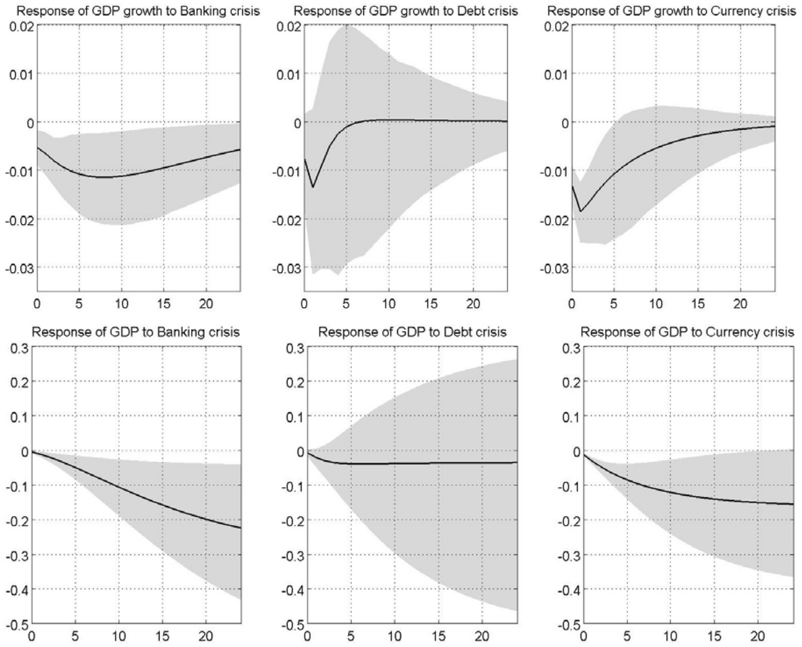
Our results from the panel VAR impulse responses show that all of the examined crises in developed economies lead to significant costs for the economy. The costs in terms of real output appear to be persistent mainly in the case of banking crises, as the related credit crunch and potential crisis of confidence may lead to pronounced deleveraging, and the recovery may take longer (Frydl, 1999). In addition, as noted above, a banking crisis increases the likelihood of both a currency crisis and a debt crisis.
The mean cumulative loss of a banking crisis in terms of GDP amounts to 25% in our simulation. GDP does not recover fully even after six years.7 There is corresponding evidence in the literature that a banking crisis, or, more specifically, an unresolved banking crisis, led to Japan's lost decade (Caballero et al., 2008). Leaven and Valencia (2012) argue that it is actually a 'curse' of advanced economies to rely too much on macroeconomic policies instead of applying proper financial restructuring.
In our sample, the GDP loss is more immediate but shorter-lasting in the case of currency crises, with a total cumulative loss of 15%. The costs are very short-lived and lower overall (around 4% of GDP in cumulative terms) in the case of debt crises. For debt crises, there are very wide confidence intervals, which can again be attributed to the low occurrence of debt crises in the sample of developed economies.8
The costs of economic crises recently reignited a lively debate about early warning indicators (see Alessi and Detken, 2011, Bussiere and Fratzscher, 2006, Frankel and Saravelos, 2012, and Rose and Spiegel, 2011, above all). In the following section, we apply a methodology dealing with model uncertainty to select the most useful early warning indicators for banking and currency crises. Due to the low occurrence of debt crises in our sample, we do not attempt to identify such indicators for this type of crisis.
4. Early Warning Indicators of Banking and Currency Crises
In recent years, the question of early warning indicators and models has returned to the forefront of the debate among academics and policy makers due to the financial crisis of 2008 and the subsequent turbulence.
Following the seminal work of Kaminsky and Reinhart (1999), who identified a boom in economic activity, preceded by credit and capital inflows, as the leading indicator of banking and balance of payments crises, recent studies have suggested housing prices (Barrel et al., 2010) or global liquidity (Alessi and Detken, 2011) as early warning indicators of economic crises. Frankel and Saravelos (2012) suggest an overvalued currency and insufficient central bank reserves as indicators of country vulnerability.
The list of candidate variables is long. For example, Frankel and Saravelos (2012) consider over 50 variables, Rose and Spiegel (2011) over 60 variables, and Alessi and Detken (2011) 89 candidate series (in most cases the list includes various transformations of original data series). Candidate variables have been tested either separately (Alessi and Detken, 2011) or in an early warning model (Frankel and Saravelos, 2012; Rose and Spiegel, 2011). In the latter case, insignificant variables have remained part of the model.
We narrowed the list of candidate variables down from around 100 to 30 potential leading indicators in order to have sufficient time and country coverage. These indicators include the main macroeconomic and financial variables and are described in Annex I.3.9 The selection methods, based, for example, on choosing only one transformation for each candidate variable, can be found in a companion paper (Babecký et al., 2012). We then proceeded to detect the most robust indicators of economic crises from the list of 30 potential ones. As reliable data for some countries start only in the early 1990s, the panel is unbalanced.
There are at least two problems with running a simple regression (in this literature typically the multivariate logit model; see Demirgüç-Kunt and Detragiache, 2005, for a survey of approaches) in situations where there are many potential explanatory variables. First, putting all of the potential variables into one regression might inflate the standard errors if irrelevant variables are included. Second, using sequential testing to exclude unimportant variables might deliver misleading results since there is a chance of excluding the relevant variable each time the test is performed. A vast literature uses model averaging to address these issues, in economics notably in the domain of determinants of economic growth (Fernandez et al., 2001; Sala-i-Martin et al., 2004; Feldkircher and Zeugner, 2009; Moral-Benito, 2011). The only existing paper addressing model uncertainty in the domain of early warning indicators is Crespo-Cuaresma and Slacik (2009), who study currency crises in 27 developing countries using monthly data from 1994–2003.
Bayesian model averaging (BMA) takes into account model uncertainty by considering the model combinations and weighting them according to their model fit.
In particular, we employ BMA to detect the robust early warning indicators from the list of 30 potential ones. We consider the following linear regression model:
where is the dummy variable for crisis onset, is a constant, is a vector of coefficients, and is a white noise error term. denotes some subset of all available relevant explanatory variables, i.e., potential early warning indicators . The number of potential explanatory variables yields potential models. Subscript is used to refer to one specific model out of these models. The information from the models is then averaged using the posterior model probabilities that are implied by Bayes' theorem:
where is the posterior model probability, which is proportional to the marginal likelihood of the model times the prior probability of the model .
The robustness of a variable in explaining the dependent variable can be expressed by the probability that a given variable is included in the regression. It is referred to as the posterior inclusion probability (PIP) and is computed as follows:
The PIP captures the extent to which we can assess how robustly a potential explanatory variable is associated with the dependent variable. Variables with a high PIP can be considered robust determinants of the dependent variable, while variables with a low PIP are deemed not robustly related to the dependent variable.
Typically it is not feasible to go through all of the models if the number of potential explanatory variables is large (in our case with 30 variables, the model space is almost ). We therefore employ the Markov Chain Monte Carlo Model Comparison () method developed by Madigan and York (1995). The algorithm focuses on model regions with high posterior model probability and is thus able to approximate the exact posterior probability in an efficient manner.10
Our left-hand side variable is the onset of a banking/currency crisis. We are searching for early warning indicators that will issue a signal of possible crisis onset. Consequently, we transform the binary crisis occurrence indices into the crisis onset variable by retaining the value of 1 in the quarter when the crisis started.11 The narratives collected during the survey of country experts were of vital importance to determine correctly the onset of crises in our quarterly database, especially as some crises last longer and arguably even overlap. In our companion paper (Babecký et al., 2012), we also make use of a crisis occurrence index, but we combine it with the crisis incidence in terms of the real costs for the economy to identify risk factors that determine the costs of crises.
We use three different warning horizons for the BMA analysis: within 4 quarters, from 5 to 8 quarters, and from 9 to 12 quarters. That is to say, rather than looking at the exact lags of the potential early warning indicator, we look at a time interval (window), as suggested by Bussiere and Fratzscher (2006). In other words, rather than trying to predict the exact quarter in which the crisis occurred, we test whether a crisis occurs within 1 year, between 1 and 2 years, and between 2 and 3 years after the realized value of each potential early warning indicator.
The results for the onset of banking crises are illustrated in Figures 6–8.12 At a warning horizon of up to 4 quarters, the BMA exercise shows that increasing domestic private credit, FDI inflows, and money market rates, and high world inflation and world output growth preceded banking crises. When we extend our horizon to look at crisis onset between 5 and 8 quarters, the set of most relevant indicators changes somewhat. In particular, the terms of trade and, rather surprisingly, decreasing government debt move up the list of leading indicators of banking crises. This may be a spurious result somehow related to the rather low short-term dynamics of this variable (for most countries until recently), albeit with an increasing trend. Finally, at a horizon of between 9 and 12 quarters, a decreasing baa spread (tracking decreasing risk premia for corporate loans), falling commodity prices, and increasing household loans also show up.
Therefore, it seems that at longer horizons the most useful indicators relate to investment optimism, leading to a boom (or bubble) and subsequent bust. For a robustness check, we also perform the exercise for the whole period of crisis occurrence rather than crisis onset (at horizons of 4, 8, and 12 quarters), recognizing that there may be some noise in tracking the exact timing of crisis occurrence. The results (available upon request) are consistent overall with those for crisis onset. Interestingly, the variable domestic private credit pops up across all these six specifications (for onset and occurrence, each at three different horizons) as a significant indicator with a mean PIP equal to 1. This is consistent with the previous evidence of Alessi and Detken (2011), Kaminsky and Reinhart (1999), Borio and Lowe (2002), and Demirgüç-Kunt and Detragiache (1998, 2005) pointing to a potentially detrimental role of excessive credit growth.
Indeed, Reinhart and Rogoff (2011) argue that banking crises are driven by private sector defaults, which are in turn driven by excessive private credit growth. Unlike these papers, our results indicate that banking crises occur during the expansion phase (FDI inflows, increasing money market rates) rather than as the economy enters recession (domestic GDP does not enter the set of most significant crisis indicators with any sign). We do not find a significant role for domestic inflation and share prices. In addition, we find that some leading indicators are of a global rather than local nature (world inflation and GDP growth). This seems to be related to the fact that the developed countries in our sample are more integrated into global markets.

Note: Rows = potential early warning indicators. Columns = best models according to marginal likelihood, ordered from left. Full cell = variable included in model, blue = positive sign, red = negative sign.
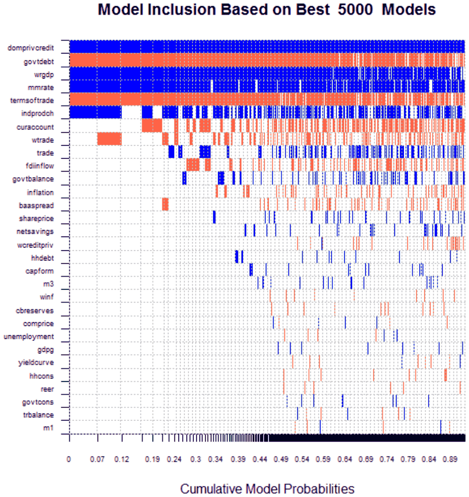
Note: Rows = potential early warning indicators. Columns = best models according to marginal likelihood, ordered from left. Full cell = variable included in model, blue = positive sign, red = negative sign.
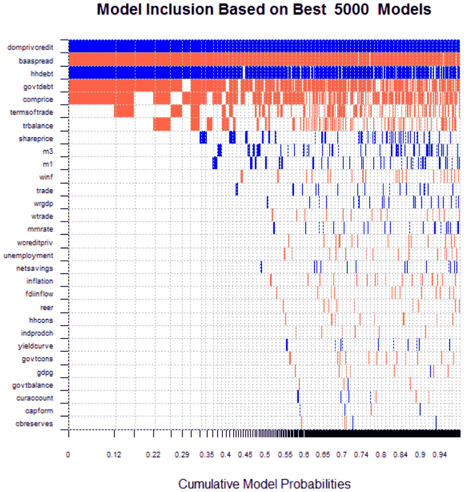
Note: Rows = potential early warning indicators. Columns = best models according to marginal likelihood, ordered from left. Full cell = variable included in model, blue = positive sign, red = negative sign.
The results for the onset of currency crises are reported in Figures 9–11. We can see that the set of leading indicators of currency crises differ from that of banking crises. At a horizon of up to 4 quarters, the main predictors of currency crises are a worsening government balance, falling central bank reserves, an increasing money market rate, and rising household debt. We again note the puzzling effect of low government debt, which may be a spurious relationship related to low short-term dynamics and the presence of a trend for most countries in the sample. Increasing household debt and a rising money market rate are consistent with the hypothesis that currency crises, like banking crises, are preceded by economic expansions. On the other hand, these developments are possible consequences of ongoing banking turmoil (as noted in Figure 4, banking crises seem to precede currency crises), like a deteriorating government balance, which pops up as another leading indicator of currency crises. Falling central bank reserves seem to indicate an effort by the domestic monetary authority to support the domestic currency, or an inability to do so, and this finding is consistent with the original finding of Kaminsky et al. (1998) and Kaminsky and Reinhart (1999). Unlike them, we find no significant role for the real exchange rate and domestic inflation.13
When looking at the horizon of between 5 and 8 quarters, the reasonable indicator of a deteriorating current account balance becomes prominent, as does high domestic private credit. The money market rate keeps its significance. This finding challenges the proposition of early models of currency crises (Krugman, 1979) that expansionary monetary (and fiscal) policy is responsible for a loss of international reserves and leads to a currency crisis.14 Assuming that money market rates reflect the monetary policy stance, we find the opposite. However, the positive sign of the money market rate is not entirely consistent with the positive sign of the yield curve coefficient and the negative sign of government debt. If money market rates are increasing in the 2-year run-up to a currency crisis, an increasing slope of the yield curve (the difference between the long-term bond yield and the money market rate) can be achieved only by a disproportionately higher increase in government financing costs. Yet this is inconsistent with the negative sign of (i.e., decreasing) government debt.
At the horizon of between 9 and 12 quarters, the terms of trade appear as an additional indicator, though with a somewhat counterintuitive sign, possibly resulting from cyclical behavior of trade prices.
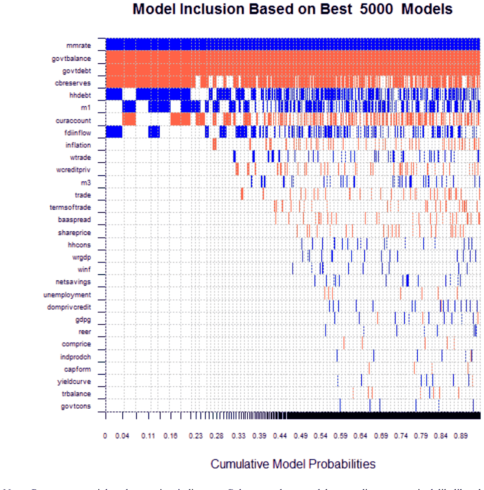
Note: Rows = potential early warning indicators. Columns = best models according to marginal likelihood, ordered from left. Full cell = variable included in model, blue = positive sign, red = negative sign.
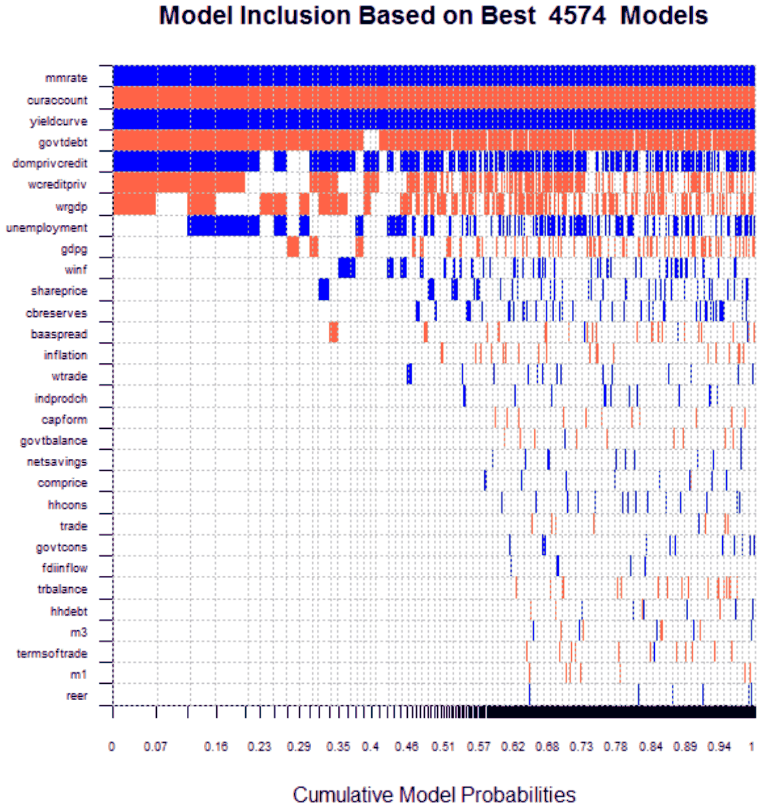
Note: Rows = potential early warning indicators. Columns = best models according to marginal likelihood, ordered from left. Full cell = variable included in model, blue = positive sign, red = negative sign.
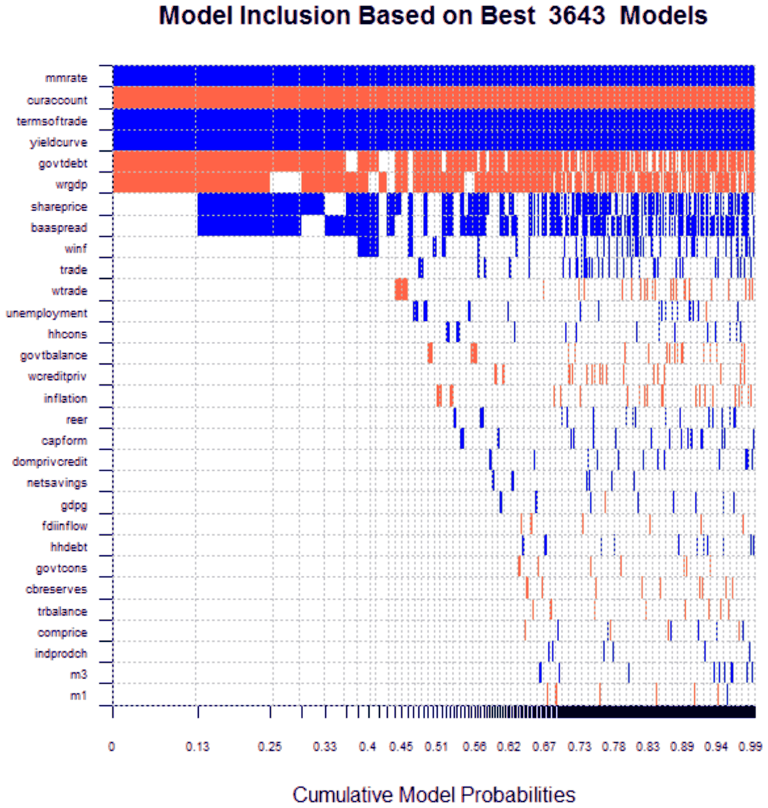
Note: Rows = potential early warning indicators. Columns = best models according to marginal likelihood, ordered from left. Full cell = variable included in model, blue = positive sign, red = negative sign.
We are aware of the limitations of applying OLS estimation for models with binary dependent variables. However, alternative estimation methods such as logit or probit models have their own limitations when the distributional assumptions do not hold, for example in the presence of heteroscedasticity (which is the case of our data series despite a relatively homogeneous panel consisting of developed countries). In Annex I.4, drawing on the example of early warning indicators of banking crisis onset (horizon within four quarters), we provide a robustness check using BMA for a limited dependent variable as well as panel regression results with a linear probability model and logit. The results do not alter substantially. All the variables that were identified above (according to the PIP) keep their sign and significance.
5. Signaling Analysis
As presented above, the most robust indicator of banking crisis onset, consistently appearing at all the lags tested (and in the alternative specifications), is domestic private credit. We follow the early warning literature and evaluate the performance of this single indicator by minimizing policy makers' loss function with respect to Type I errors (missed crises) and Type II errors (false alarms) (Kaminsky et al., 1998; Kaminsky and Reinhart, 1999; Alessi and Detken, 2011; among others). Along with Alessi and Detken (2011), we believe that a purely statistical criterion such as the noise-to-signal ratio may not be sufficient for the evaluation of early warning models from the policy maker's view, since it does not take into account policy makers' preferences as regards missed crises versus false alarms.
Finally, we show that using a composite early warning index consisting of multiple variables (including all variables with PIP > 0.5 according to the BMA results) increases the usefulness of the model when compared to using the best single indicator (domestic private credit). While Alessi and Detken (2011) assess the quality of each individual variable as an early warning indicator, we—in addition—evaluate a composite early warning index composed of nine variables. However, these variables are selected ex post, so the evaluation exercise is not real-time. Consequently, we use the simple sum of the standardized values to construct the index rather than using the model-implied weights (which were, indeed, unknown to policy makers in the respective periods).
We follow the literature and illustrate the results with the help of a matrix in which crisis occurrence and the respective warning issuance are measured against each other:
| Crisis occurred | No crisis occurred | |
|---|---|---|
| Warning issued | A (94) | B (444) |
| No warning issued | C (71) | D (2,753) |
In the matrix, the numbers in parentheses are the counts of the respective events in the whole sample when the composite early warning index is used, optimized for an equal preference weight between false alarms and missed crises (this corresponds to preference parameter θ = 0.5 in the policy makers' loss function defined below).
The noise-to-signal ratio is defined as , capturing the ratio of the share of false alarms (noise) versus the share of correctly predicted crises (signal). However, this measure does not include the share of missed crises: the Type I prediction error, which is defined as . Analogously, the Type II error (false alarms) is defined as . Alessi and Detken (2011) therefore propose finding the threshold value of the early warning indicator which minimizes the policy makers' loss function in the form of
where *θ* is the parameter of the relative importance of Type I errors with respect to Type II errors. Realizing that the policy maker can always achieve a loss of by disregarding the early warning indicator (for θ > 0.5, the policy maker should always react while for θ < 0.5 he does not react at all), we can define the usefulness (Alessi and Detken, 2011) of the indicator as
If the usefulness is positive, there is a positive benefit of using the proposed early warning mechanism. For every value of the relative preference weight *θ*, we find the optimal trigger value of the early warning indicator by minimizing the loss function. If the indicator exceeds the trigger value, a signal is issued (and a policy response executed). When the policy maker has a relatively low preference for the loss from missed crises (low *θ*), the optimal trigger value is high, as is the share of missed crises. Increasing the preference weight *θ* of missed crises, the optimal trigger falls and the initially low share of false alarms is traded off against the share of missed crises. Figure 12 shows the share of Type I errors (missed crises) versus Type II errors (false alarms) along with the optimal trigger values of the early warning indicator constructed as a simple sum of nine standardized variables selected within the BMA framework (with PIP > 0.5). These include domestic private credit, FDI inflow, world inflation, the money market rate, world GDP, the trade balance, openness (the trade-to-GDP ratio), the real effective exchange rate, and the government balance. For comparison we also draw the optimal trigger based only on the best performing variable, namely, the ratio of domestic private credit to GDP. Although the combination of different variables delivers better performance in terms of usefulness as defined above, the use of a single variable provides a better interpretation. In particular, assuming an equal preference weight between false alarms and missed crises (θ = 0.5) Figure 12 shows that the threshold value for domestic private credit growth (as a deviation from the HP trend) is close to 2%. That is, if the ratio of domestic private credit to GDP deviates by more than 2% from its trend value, policy makers should apply macroprudential instruments in order to avoid a future banking crisis.
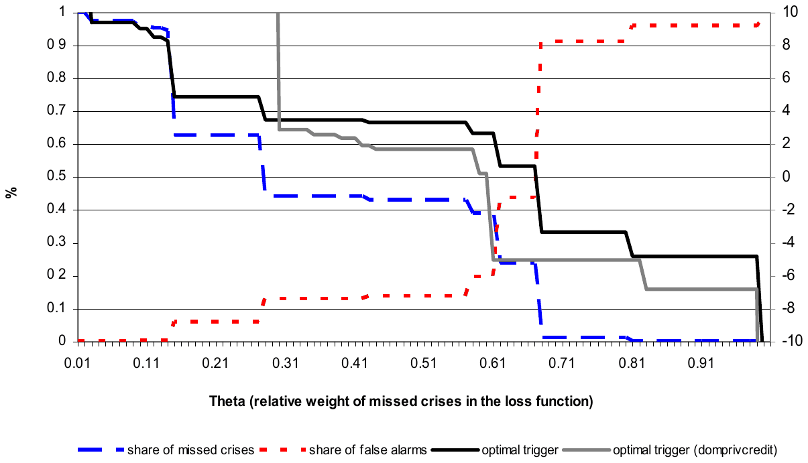
Note: The share of missed crises and false alarms and the optimal value of the trigger are reported for the composite early warning indicator consisting of the sum of the standardized nine most robust indicators according to the BMA analysis. For comparison, the optimal value of the trigger based only on the single best performing indicator (the ratio of domestic private credit to GDP) is provided.
Finally, Figure 13 shows the noise-to-signal ratio and the value of the loss function, along with the usefulness of both the single indicator of domestic private credit and the composite indicator computed as the sum of the nine 'best' variables according to the BMA analysis (with PIP > 0.5). By construction, usefulness achieves its maximum when false alarms and missing crises are viewed as equally harmful (θ = 0.5). The usefulness of the single indicator of domestic private credit is around 15%, while the composite indicator reaches a value above 0.20, meaning that it is possible to avoid over 20% of the loss arising from missing crises and false alarms by using the early warning indicator. We conclude that using the composite early warning index reduces the loss by around 5% in comparison to the best single-variable indicators.
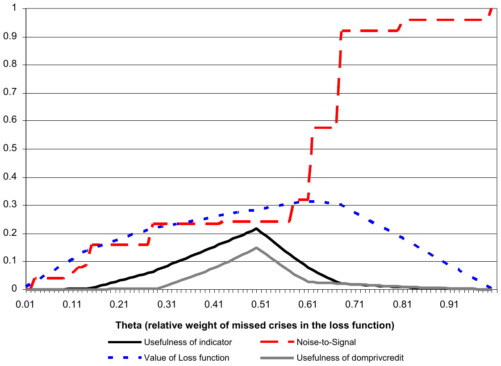
Note: The noise-to-signal ratio and the value of loss function are reported for the composite early warning indicator. Usefulness is reported for both the composite indicator and the single indicator of domestic private credit
Alessi and Detken (2011) report similar usefulness values of around 0.2–0.25 for the same preference parameter *θ*. A few differences in our approach are noteworthy. First, Alessi and Detken (2011) predict asset booms, while we aim at early warnings of crises. Also, we study early warnings of the onset of a crisis within 4 quarters. Second, we use a broader group of countries. Therefore, the results are not directly comparable.
6. Concluding Remarks
Focusing on a sample of 40 developed countries, we compiled a quarterly database of the occurrence of banking, currency, and debt crises during 1970–2010 based on the stock of existing literature. Noting some disagreement among the studies on the exact timing of crisis episodes (particularly the end of crises), we complemented the crisis database with a survey among country experts (mainly from central banks) in all countries of our sample. The EU-27 survey was conducted with the help of the ESCB MaRs network, while the remaining OECD country experts outside the EU kindly contributed directly to our database.
Employing a panel vector autoregression model, we found evidence that in developed economies, currency and debt crises are typically preceded by banking crises, while the reverse causality is not supported by the data. Furthermore, banking crises appear to be persistent, meaning that even two years after the beginning of a banking crisis there is still a higher than 50% probability of it continuing. In contrast, currency and debt crises are relatively short-lasting: the probability of crisis occurrence falls below 50% two to three quarters after the crisis onset.
According to our panel vector autoregression analysis, all three types of crisis examined have an adverse impact on the real economy. While all three types of crisis lead to a decline in output growth, banking crises are particularly costly. This is also related to the previous finding that banking crises may trigger other types of crises.
Next, we identified 30 potential warning indicators of banking and currency crises. We applied Bayesian model averaging in order to tackle the model uncertainty problem, and we considered various warning horizons ranging from less than a year ('late warning') to three years ('early warning'). The most consistent result across the various specifications and time horizons is that rising domestic private credit precedes banking crises, while rising money market rates, FDI inflows, world GDP, and world inflation are also leading indicators worth monitoring. Regarding currency crises, rising money market rates precede the onset of a crisis at all horizons up to three years. The role of other indicators differs according to the type of crisis and the warning horizon selected.
Finally, we performed a signaling analysis with the indicators retained by the Bayesian model averaging. We note that a combination of several early warning indicators delivers a better-performing early warning model compared to a single early warning predictor, namely, the ratio of domestic private credit to GDP (which turned out to be the most robust variable in Bayesian model averaging). However, the advantage of employing a single indicator in signaling analysis is the possibility of determining an intuitive threshold value. In particular, we find that if the ratio of domestic private credit to GDP deviates by more than 2% from its trend value, policy makers should take it as a warning signal that the risk of future banking turmoil has increased.
REFERENCES
- Alessi, L. and Detken, C. 2011. Quasi Real Time Early Warning Indicators for Costly Asset Price Boom/bust Cycles: A Role for Global Liquidity. European Journal of Political Economy, 27(3), 520–533.
- Assenmacher-Wesche, K. and Gerlach, S. 2010. Monetary Policy and Financial Imbalances: Facts and Fiction. Economic Policy, 25(63), 437–482.
- Babecký, J., Havránek, T., Matějů, J., Rusnák, M., Šmídová, K. and Vašíček, B. 2012. Leading Indicators of Crisis Incidence: Evidence from Developed Countries. Czech National Bank, mimeo.
- Barrell, R., Davis, E. P., Karim, D. and Liadze, I. 2010. Bank Regulation, Property Prices and Early Warning Systems for Banking Crises in OECD Countries. Journal of Banking & Finance, 34(9), 2255–2264.
- Bloom, N. 2009. The Impact of Uncertainty Shocks. Econometrica, 77(3), 623–685.
- Borensztein, E. and Panizza, U. 2009. The Costs of Sovereign Defaults. IMF Staff Papers, 56(4), 683–741.
- Borio, C. and Lowe, P. 2002. Assessing the Risk of Banking Crisis. BIS Quarterly Review, December, 43–54.
- Bussiere, M. 2013. Balance of Payment Crises in Emerging Markets: How Early Were the 'Early' Warning Signals? Applied Economics, 459(12), 1601–1623.
- Bussiere, M. and Fratzscher, M. 2006. Towards a New Early Warning System of Financial Crises. Journal of International Money and Finance, 25(6), 953–973.
- Caballero, R., Hoshi, T. and Kashyap, A. 2008. Zombie Lending and Depressed Restructuring in Japan. American Economic Review, 98, 1943–1977.
- Canova, F. and Ciccarelli, M. 2009. Estimating Multicountry VAR Models. International Economic Review, 50(3), 929–959.
- Caprio, G. and Klingebiel, D. 2003. Episodes of Systemic and Borderline Financial Crises. World Bank, January 22. http://go.worldbank.org/5DYGICS7B0
- Ciccarelli, M., Maddaloni, A. and Peydro, J.-L. 2010. Trusting the Bankers: A New Look at the Credit Channel of Monetary Policy. ECB Working Paper No. 1228.
- Crespo-Cuaresma, J. and Slacik, T. 2009. On the Determinants of Currency Crisis: The Role of Model Uncertainty. Journal of Macroeconomics, 31, 621–632.
- Demirgüç-Kunt, A. and Detragiache, E. 1998. The Determinants of Banking Crises in Developing and Developed Countries. IMF Staff Papers, 45(1), 81–109.
- Demirgüç-Kunt, A. and Detragiache, E. 2005. Cross-Country Empirical Studies of Systemic Bank Distress: A Survey. IMF Working Paper No. 05/96.
- Dell'Ariccia, G., Detragiache, E. and Rajan, R. 2008. The Real Effect of Banking Crises. Journal of Financial Intermediation, 17, 89–112.
- Detragiache, E. and Spilimbergo, A. 2001. Crises and Liquidity—Evidence and Interpretation. IMF Working Paper No. 01/02.
- Eichengreen, B. and Hausmann, R. (eds.) 2005. Other People's Money: Debt Denomination and Financial Instability in Emerging Market Economies. The University of Chicago Press.
- Feldkircher, M., and Zeugner, S. 2009. Benchmark Priors Revisited: On Adaptive Shrinkage and the Supermodel Effect in Bayesian Model Averaging. IMF Working Paper No. 09/202.
- Fernandez, C., Ley, C. and Steel, M. F. J. 2001. Model Uncertainty in Cross-country Growth Regressions. Journal of Applied Econometrics, 16(5), 563–576.
- Fernandez-Villaverde, J., Guerron-Quintana, P., Rubio-Ramirez, J. F. and Uribe, M. 2011. Risk Matters: The Real Effects of Volatility Shocks. American Economic Review, 101(6), 2530–2561.
- Fontaine, T. 2005. Currency Crises in Developed and Emerging Market Economies. IMF Working Paper No. 05/13.
- Frankel, J. A. and Rose, A. K. 1996. Currency Crashes in Emerging Markets: An Empirical Treatment. Journal of International Economics, 41(3–4), 351–366.
- Frankel, J. A. and Saravelos, G. 2012. Can Leading Indicators Assess Country Vulnerability? Evidence from the 2008–09 Global Financial Crisis. Journal of International Economics, 87(2), 216–231.
- Frydl, E. J. 1999. The Length and Cost of Banking Crises. IMF Working Paper No. 99/30.
- Furceri, D. and Zdzienicka, A. 2012. How Costly Are Debt Crises? Journal of International Money and Finance, 31(4), 726–742.
- Holtz-Eakin, D., Neset, W. and Rosen, H. S. 1988. Estimating Vector Autoregressions with Panel Data. Econometrica, 56(6), 1371–1395.
- Kaminsky, G. L. 2006. Currency Crises: Are They All the Same? Journal of International Money and Finance, 25(3), 503–527.
- Kaminsky, G. L., Lizondo, S. and Reinhart, C. M. 1998. The Leading Indicators of Currency Crises. IMF Staff Papers, 45(1), 1–48.
- Kaminsky, G. L. and Reinhart, C. M. 1999. The Twin Crises: The Causes of Banking and Balance-of-Payments Problems. American Economic Review, 89(3), 473–500.
- Krugman, P. 1979. A Model of Balance-of-Payments Crises. Journal of Money, Credit, and Banking, 11(3), 311–325.
- Krugman, P. 1999. Balance Sheets, the Transfer Problem, and Financial Crises. International Tax and Public Finance, 4, 459–472.
- Laeven, L. and Valencia, F. 2008. Systemic Banking Crises: A New Database. IMF Working Paper No. 08/224.
- Laeven, L. and Valencia, F. 2010. Resolution of Banking Crises: The Good, the Bad, and the Ugly. IMF Working Paper No. 10/146.
- Laeven, L. and Valencia, F. 2012. Systemic Banking Crises Database: An Update. IMF Working Paper No. 12/163.
- Levy-Yeyati, E. L. and Panizza, U. 2011. The Elusive Costs of Sovereign Defaults. Journal of Development Economics, 94(1), 95–105.
- Madigan, D. and Raftery, A. E. 1994. Model Selection and Accounting for Model Uncertainty in Graphical Models using Occam's Window. Journal of the American Statistical Association, 89, 1535–1546.
- Madigan, D. and York, J. 1995. Bayesian Graphical Models for Discrete Data. International Statistical Review, 63(2), 215–232.
- Mishkin, F. S. 1997. The Causes and Propagation of Financial Instability: Lessons for Policymakers. Presented at Maintaining Financial Stability in a Global Economy, a symposium sponsored by the Federal Reserve Bank of Kansas City, Jackson Hole, Wyo., August 28–30, 55–96.
- Mody, A. and Sandri, D. 2012. The Eurozone Crisis: How Banks and Sovereigns Came to Be Joined at the Hip. Economic Policy, April, 199–230.
- Moral-Benito, E. 2011. Model Averaging in Economics. Bank of Spain Working Paper No. 1123.
- Raftery, A. E. 1995. Bayesian Model Selection in Social Research. Sociological Methodology, 25, 111–163.
- Raftery, A. E. 1996. Approximate Bayes Factors and Accounting for Model Uncertainty in Generalised Linear Models. Biometrika, 83(2), 251–266.
- Ramey, V. A. 2011. Can Government Purchases Stimulate the Economy? Journal of Economic Literature, 49(3), 673–685.
- Ramey, V. A. and Shapiro, M. D. 1998. Costly Capital Reallocation and the Effects of Government Spending. Carnegie-Rochester Conference Series on Public Policy, 48(1), 145–194.
- Reinhart, C. M. and Rogoff, K. S. 2008. Banking Crises: An Equal Opportunity Menace. NBER Working Paper No. 14587.
- Reinhart, C. M. and Rogoff, K. S. 2011. From Financial Crash to Debt Crisis. American Economic Review, 101(5), 1676–1706.
- Romer, C. D. and Romer, D. H. 1994. Monetary Policy Matters. Journal of Monetary Economics, 34(1), 75–88.
- Rose, A. K. and Spiegel, M. M. 2011. Cross-Country Causes and Consequences of the 2008 Crisis: An Update. European Economic Review, 55(3), 309–324.
- Velasco, A. 1987. Financial Crises and Balance of Payments Crises: A Simple Model of the Southern Cone Experience. Journal of Development Economics, 27(1–2), 263–283.
- Sala-i-Martin, X., Doppelhofer, G. and Miller, R. I. 2004. Determinants of Long-Term Growth: A Bayesian Averaging of Classical Estimates (BACE) Approach. American Economic Review, 94(4), 813–835.
ANNEX I. Data
I.1. List of countries
| No. | Country | EU | OECD |
|---|---|---|---|
| 1 | Australia | OECD | |
| 2 | Austria | EU | OECD |
| 3 | Belgium | EU | OECD |
| 4 | Bulgaria | EU | |
| 5 | Canada | OECD | |
| 6 | Cyprus | EU | |
| 7 | Czech Republic | EU | OECD |
| 8 | Denmark | EU | OECD |
| 9 | Estonia | EU | OECD |
| 10 | Finland | EU | OECD |
| 11 | France | EU | OECD |
| 12 | Germany | EU | OECD |
| 13 | Greece | EU | OECD |
| 14 | Hungary | EU | OECD |
| 15 | Chile | OECD | |
| 16 | Iceland | OECD | |
| 17 | Ireland | EU | OECD |
| 18 | Israel | OECD | |
| 19 | Italy | EU | OECD |
| 20 | Japan | OECD | |
| 21 | Korea | OECD | |
| 22 | Latvia | EU | |
| 23 | Lithuania | EU | |
| 24 | Luxembourg | EU | OECD |
| 25 | Malta | EU | |
| 26 | Mexico | OECD | |
| 27 | Netherlands | EU | OECD |
| 28 | New Zealand | OECD | |
| 29 | Norway | OECD | |
| 30 | Poland | EU | OECD |
| 31 | Portugal | EU | OECD |
| 32 | Romania | EU | |
| 33 | Slovakia | EU | OECD |
| 34 | Slovenia | EU | OECD |
| 35 | Spain | EU | OECD |
| 36 | Sweden | EU | OECD |
| 37 | Switzerland | OECD | |
| 38 | Turkey | OECD | |
| 39 | United Kingdom | EU | OECD |
| 40 | United States | OECD |
I.2. Sources and definition of crises
Banking crises
| No. | Source | Coverage and definition |
|---|---|---|
| 1. | Caprio and Klingebiel (2003) | The annual dataset (1970–2002) includes information on 117 episodes of systemic banking crises in 93 countries and on 51 episodes of borderline and non-systemic banking crises in 45 countries. A systemic crisis is defined as 'much or all of bank capital was exhausted.' Expert judgment was also employed 'for countries lacking data on the size of the capital losses, but also for countries where official estimates understate the problem.' |
| 2. | Kaminsky and Reinhart (1999) | The monthly dataset (1970–1995) includes 26 episodes of banking crisis in 20 countries. Banking crises are defined by two types of events: '(1) bank runs that lead to the closure, merging, or takeover by the public sector of one or more financial institutions; and (2) if there are no runs, the closure, merging, takeover, or large-scale government assistance of an important financial institution (or group of institutions) that marks the start of a string of similar outcomes for other financial institutions.' The dataset of banking crises was compiled using existing studies of banking crises and the financial press. |
| 3. | Laeven and Valencia (2008, 2010, 2012) | The annual dataset (1970–2011) covers systemically important banking crises (147 episodes) in over 100 countries all over the world and provides information on crisis management strategies. A banking crisis is considered to be systemic if the following two conditions are met: '(1) Significant signs of financial distress in the banking system (as indicated by significant bank runs, losses in the banking system, and/or bank liquidations); and (2) Significant banking policy intervention measures in response to significant losses in the banking system.' The first year that both criteria are met is considered to be the starting year of the banking crisis, and policy interventions in the banking sector are considered significant if at least three out of the following six measures were used: '(1) extensive liquidity support; (2) bank restructuring costs; (3) significant bank nationalizations; (4) significant guarantees put in place; (5) significant asset purchases; and (6) deposit freezes and bank holidays.' The dataset is compiled using the authors' calculations combined with some elements of judgment for borderline cases. |
| 4. | Reinhart and Rogoff (2008, 2011) | The annual dataset (1800–2010, from the year of independence) covers banking crises in 70 countries. The definition of banking crisis is the same as in Kaminsky and Reinhart (1999) (see above). The dataset of banking crises was compiled using existing studies of banking crises and the financial press. |
Currency (balance of payment) crises
| No. | Source | Definition and coverage |
|---|---|---|
| 1. | Kaminsky and Reinhart (1999) | The monthly dataset (1970–1995) includes 76 episodes of currency crisis in 20 countries. A currency crisis is defined excessive exchange rate volatility ('turbulence'), that is, when the index representing a weighted average of changes in the exchange rate and reserves exceeds a certain threshold. 'Crisis episodes' are then defined as 'the month of the crisis plus the 24 months preceding the crisis.' For a robustness check, two alternative windows are used, starting at 12 and 18 months prior to the crisis. The dataset is compiled using the authors' calculations. |
| 2. | Kaminsky (2006) | The monthly dataset (1970–2002) includes 96 episodes of currency crisis in 20 industrial and developing countries. The definition of currency crises and 'crisis episodes' is as in Kaminsky and Reinhart (1999). The dataset is compiled using the authors' calculations. |
| 3. | Laeven and Valencia (2008, 2010, 2012) | The annual dataset (1970–2011) includes 218 currency crises identified in over 100 countries all over the world. A currency crisis is defined as 'a nominal depreciation of the currency vis-à-vis the U.S. dollar of at least 30 percent that is also at least 10 percentage points higher than the rate of depreciation in the year before… For countries that meet the criteria for several continuous years, we use the first year of each 5-year window to identify the crisis.' It should be noted that this list also includes large devaluations by countries that adopt fixed exchange rate regimes. |
| 4. | Reinhart and Rogoff (2011) | The annual dataset (1800–2010, from the year of independence) tracks currency crises (also called 'crashes') in 70 countries. A currency crisis is defined as an excessive exchange rate depreciation, that is, when the annual depreciation vis-à-vis USD or the relevant anchoring currency (GBP, FRF, DM, EUR) exceeds the threshold value of 15%. The dataset is compiled using the authors' calculations. |
Debt crises
| No. | Source | Definition and coverage |
|---|---|---|
| 1. | Detragiache and Spilimbergo (2001) | The annual dataset (1971–1998) includes 54 episodes of debt crisis in 69 countries. A debt crisis is defined as a situation when 'either or both of following conditions occur: (1) there are arrears of principal or interest on external obligations towards commercial creditors (banks or bondholders) of more than 5 percent of total commercial debt outstanding; (2) there is a rescheduling or debt restructuring agreement with commercial creditors as listed in Global Development Finance (World Bank). The 5 percent minimum threshold is to rule out cases in which the share of debt in default is negligible, while the second criterion is to include countries that are not technically in arrears because they reschedule or restructure their debt obligations before defaulting.' |
| 2. | Laeven and Valencia (2008, 2010, 2012) | The annual dataset (1970–2011) includes 66 episodes of debt crisis in over 100 countries all over the world. Sovereign debt default and restructuring episodes are dated on the basis of various studies, including reports from the IMF, the World Bank and rating agencies. |
| 3. | Levy-Yeyati and Panizza (2011) | The annual dataset (1970–2005) includes 63 episodes of debt crisis in 39 countries. The dataset is compiled by the authors using Standard & Poor's, the World Bank's Global Development Finance database (analysis and statistical appendix), and press reports. |
| 4. | Reinhard and Rogoff (2011) | The annual dataset (1800–2010, from the year of independence) tracks episodes of both external and domestic debt crises in 70 countries. An 'external debt crisis involves outright default on payment of debt obligation incurred under foreign legal jurisdiction, including nonpayment, repudiation, or the restructuring of debt into terms less favorable to the lender than in the original contract.' A domestic debt crisis incorporates the definition of external debt crisis and, in addition, the freezing of bank deposits and/or forcible conversion of foreign currency deposits into local currency. |
I.3. Variables, transformations, and data sources
| No. | Variable | Description | Transformation | Main source |
|---|---|---|---|---|
| Dependent binary variables of crisis occurrence | ||||
| (i) | Banking | Banking crises (1 if a crisis was reported, 0 otherwise) | none | Authors' compilation from various sources |
| (ii) | Debt | Debt crises (1 if a crisis was reported, 0 otherwise) | none | Authors' compilation from various sources |
| (iii) | Currency | Currency crises (1 if a crisis was reported, 0 otherwise) | none | Authors' compilation from various sources |
| Potential leading indicators | ||||
| 1 | baaspread | BAA corporate bond spread | none | Reuters |
| 2 | capform | Gross total fixed capital formation (constant prices) | % qoq | Statistical offices, OECD |
| 3 | comprice | Commodity prices | % qoq | Commodity Research Bureau |
| 4 | curaccount | Current account (%GDP) | none | OECD, WDI |
| 5 | domprivcredit | Domestic credit to private sector (%GDP) | none | WDI |
| 6 | fdiinflow | FDI net inflows (%GDP) | none | WDI |
| 7 | govtcons | Government consumption (constant prices) | % qoq | OECD, statistical offices |
| 8 | govtdebt | Government debt (%GDP) | none | WDI, ECB |
| 9 | hhcons | Private final consumption expenditure (constant prices) | % qoq | Statistical offices |
| 10 | hhdebt | Gross liabilities of personal sector | % qoq | National central banks, Oxford Economics |
| 11 | houseprices | House price index | % qoq | BIS, Eurostat, Global Property Guide |
| 12 | indprodch | Industrial production index | % qoq | Statistical offices |
| 13 | indshare | Industry share (%GDP) | none | WDI, EIU |
| 14 | inflation | Consumer price index | % qoq | Statistical offices, national central banks |
| 15 | m1 | M1 | % qoq | National central banks |
| 16 | m3 | M3 | % qoq | National central banks |
| 17 | mmrate | Money market interest rate | none | IFS |
| 18 | neer | Nominal effective exchange rate | % qoq | IFS |
| 19 | netsavings | Net national savings (%GNI) | none | WDI |
| 20 | shareprice | Stock market index | % qoq | Reuters, stock exchanges |
| 21 | taxburden | Total tax burden (%GDP) | none | OECD, statistical offices |
| 22 | termsoftrade | Terms of trade | none | Statistical offices |
| 23 | trade | Trade (%GDP) | none | WDI |
| 24 | trbalance | Trade balance | 1st dif | Statistical offices, national central banks |
| 25 | wcreditpriv | Global domestic credit to private sector (%GDP) | none | WDI |
| 26 | wfdiinflow | Global FDI inflow (%GDP) | none | WDI |
| 27 | winf | Global inflation | none | IFS |
| 28 | wrgdp | Global GDP | % qoq | IFS |
| 29 | wtrade | Global trade (constant prices) | % qoq | IFS |
| 30 | yieldcurve | Long term bond yield – money market interest rate | none | National central banks |
Note: The variables in rows 1–30 (except housing prices) were downloaded from Datastream. The variables are listed in alphabetical order.
I.4. Robustness check with limited dependent variable models
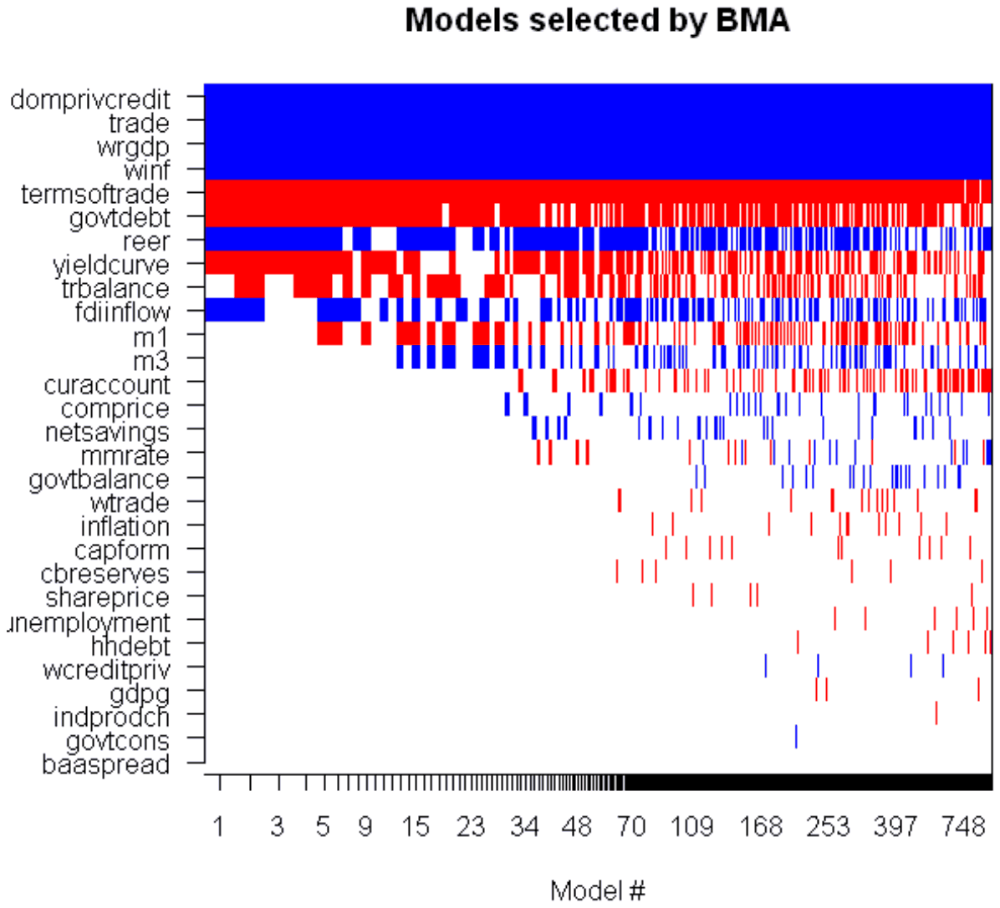
Note: Rows = potential early warning indicators. Columns = best models according to marginal likelihood, ordered from left. Full cell = variable included in model, blue = positive sign, red = negative sign. We use the library BMA for R developed by Rathery et al., available at http://cran.r-project.org/web/packages/BMA/index.html
| (LPM, FE) banking_onset4q | (LOGIT, FE) banking_onset4q | (RELOGIT) banking_onset4q | |
|---|---|---|---|
| main | |||
| domprivcredit | 0.00113*** (9.04) | 0.0153*** (5.59) | 0.0108*** (6.64) |
| fdiinflow | 0.00415*** (5.04) | 0.0416*** (2.75) | 0.00571* (1.69) |
| winf | 0.00614*** (9.17) | 0.101*** (7.82) | 0.0746*** (7.52) |
| mmrate | 0.00159*** (4.82) | 0.0196*** (3.45) | 0.0206*** (4.81) |
| wrgdp | 0.00597** (2.57) | 0.172*** (2.79) | 0.228*** (4.57) |
| trbalance | -5.03e-08*** (-3.00) | -0.00000143*** (-2.86) | -0.00000107*** (-3.72) |
| trade | 0.00105*** (2.75) | 0.0216** (2.26) | 0.0113*** (4.69) |
| reer | 0.383*** (3.60) | 9.847*** (3.98) | 8.927*** (4.06) |
| govtbalance | 0.00510*** (4.53) | 0.121*** (3.99) | 0.0717*** (3.99) |
| _cons | -0.239*** (-7.55) | -6.691*** (-16.00) | |
| N | 3377 | 3047 | 3377 |
Note: 1. LPM, FE – linear probability model (panel fixed effects estimator), 2. LOGIT, FE – limited dependent variable model (panel logit fixed effects estimator), and 3. RELOGIT – limited dependent variable model for rare events (pooled logit), t statistics in parentheses, * p < 0.10, ** p < 0.05, *** p < 0.01.
ENDNOTES
- Furthermore, inherent to every crisis are negative effects stemming from an increase in the overall uncertainty (Bloom, 2009; Fernandez-Villaverde et al., 2011).
- There are alternative definitions of a 'developed' economy. For the sake of simplicity, we consider all EU and OECD members as of 2011 (see Annex I.1). It follows that some countries graduated from the emerging or transition into the developed economy category between 1970 and 2010.
- The EU-27 survey was conducted as part of the ESCB MaRs network (in this case, all the country experts were from central banks). The remaining OECD member countries were contacted directly by us (in this case, the country experts were from central banks, international institutions, and universities). To download the database, visit the project page at http://ies.fsv.cuni.cz/en/node/372.
- The quarterly database is further explored in our second paper (Babecký et al., 2012), in which the risk factors behind the effect of crises on the real economy are assessed.
- We proceeded as follows. We aggregated the influential papers into a binary index for each type of crisis (and assigned value 1 when at least one of them indicated an occurrence) and transformed annual data into quarterly. We sent the aggregated file to the country experts for correction. The corrected files were used as an additional input into the aggregation exercise.
- The crisis duration also corresponds to the frequency of crisis occurrence: the share of episodes of banking crises identified is 16% of all observations, while the figures for currency crises and debt crises are 5.2% and 1.3%, respectively.
- The cumulative effect is similar to Leaven and Valencia (2012), who report an output loss of 26% for emerging countries and 33% for developed countries, and to Frydl (1999), who reports an average output loss of 13%.
- A short-lasting impact of a debt crisis on GDP is also found by Levy-Yeyati and Panizza (2011). Furceri and Zdzienicka (2012) find that debt crises are detrimental especially in the short term, with an estimated output loss of 5 to 10 percentage points. Borensztein and Panizza (2009) report that sovereign debt defaults reduce GDP growth by around 1.2 percentage points a year.
- Notice that our subsequent examination of the early warning indicators is not a real-time analysis due to publication lags of the data.
- We use the library BMS for R developed by Zeugner and available at http://bms.zeugner.eu/.
- In fact, this is equivalent to simulating a normalized one-unit shock to crisis occurrence as in Figures 4 and 5. One appealing feature of aiming at onset rather than occurrence is that we do not need to account for persistence in crisis occurrence and include the lag(s) of the dependent variable among the regressors.
- The complementary tables showing further estimation details such as post inclusion probabilities, post mean, post standard deviation and conditional posterior sign index are reported in the online appendix.
- Crespo-Cuaresma and Slacik (2009) use a similar BMA framework to detect early warning indicators of currency crises in emerging countries. They find that macroeconomic fundamentals are not robust indicators of currency crises in their dataset. Besides the real exchange rate, they find a significant role for financial variables, in particular financial contagion.
- Our results are at odds with Fontaine (2005), who finds a negative role for expansionary monetary policy in the run-up to a currency crisis. He finds this link to be relevant both for emerging economies and (albeit less so) for developed countries.